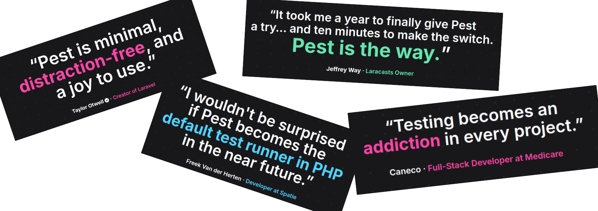
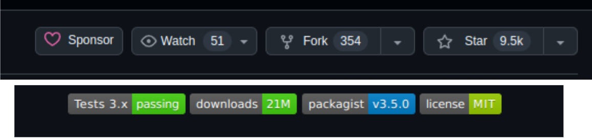
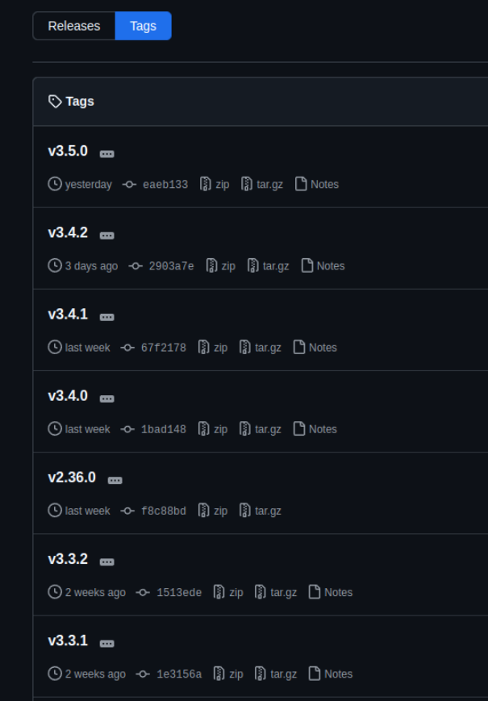
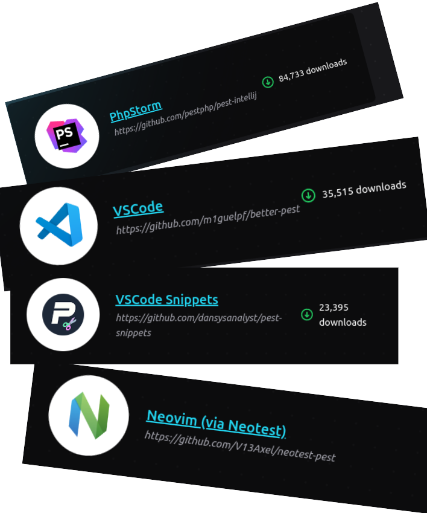
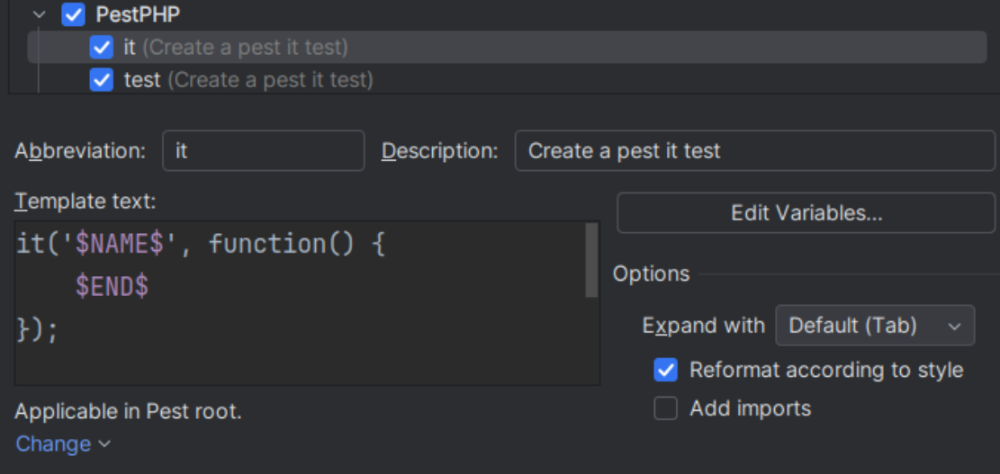
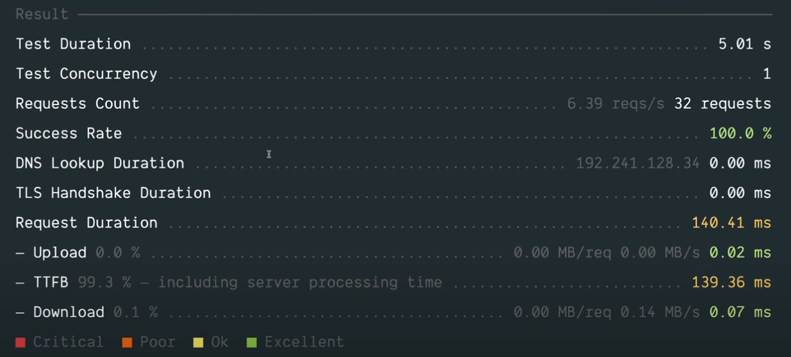
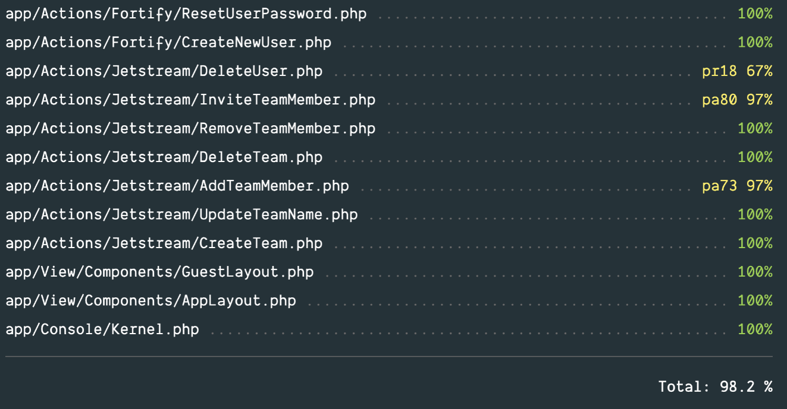
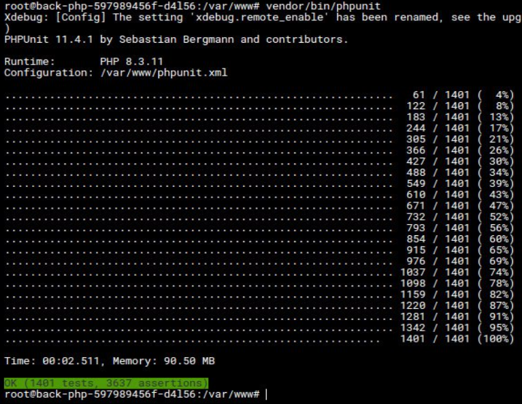
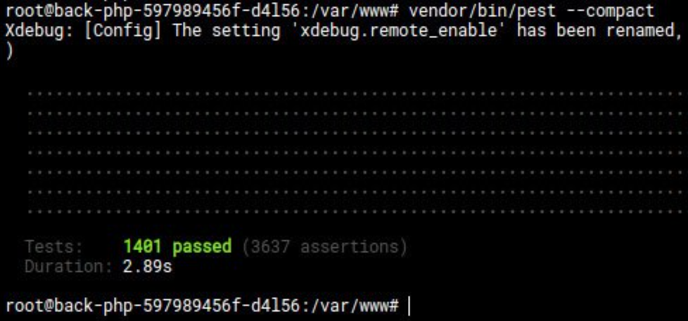
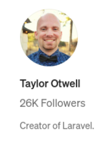

Pest’датый фреймворк для тестирования
Забанов Александр
О себе
Забанов Александр
- Руководитель направления Backend в комании Веб/Практик
- 9+ лет в backend
- PHP : Bitrix, Laravel, Symfony, Yii2
- NodeJS : Nest, Express
Почему люди не пишут тесты
- Заблуждение, что экономия на тестах = экономии бюджета проекта
- Нет компетенций
- Лень ;)
Для чего нужны автотесты
- Обеспечение качества кода
- Экономия времени и ресурсов
- Уверенность при изменениях
- Поддержание стабильности и надежности
- Упрощение поиска ошибок
- Повышение производительности команды
Какие у нас есть инструменты?
PHPUnit
Популярный фреймворк для модульного тестирования на языке PHP
Pest
"Фреймворк для тестирования, ориентированный на простоту и тщательно разработанный для того, чтобы вернуть радость тестирования на PHP."
© Контент-менеджер Pest

Сообщество Pest
- Активная поддержка сообщества.
- Частые обновления (даже слишком)
- Поддержка php 8.4 уже в тесте


Основные фишки Pest
- Синтаксис позволяющий писать тесты быстрее
-
"Мультитул"
- Архитектурные тесты
- Стресс-тесты
- Мутационное тестирование
- TODOS
- Расширяемость через плагины
- Совместимость с PHPUnit
Синтаксический сахар
PHPUnit
Pest
Плагины для редакторов кода
- Запуск из контекста IDE

- Красивая иконка у файла в IDE :)
- Шаблоны

Наименование
Раньше: [ТестирумыйМетод]_[Сценарий]_[ОжидаемыйРезультат]
Пример:
Сейчас: [Любой текст]
Пример:
Группы
Для разделения единиц поведения
Запуск
Skip
Если вам нужно временно отключить тест.
Mocking
Нужно будет установить библиотеку для моков. Pest рекомендует mockery
Higher Order Testing
Удобный билдер, в котором доступны как методы Pest так и PHPUnit
субъект-действие-объект
Другие виды тестирования в Pest
Другие виды тестирования в Pest
- Архитектурные тесты
- Стресс-тестирование
- Type Coverage
- Mutation Testing
- Snapshot
Архитектурные тесты
Проверяют, соответствует ли ваше приложение набору архитектурных правил
- toUseStrictTypes() метод можно использовать для обеспечения того, чтобы все файлы в заданном пространстве имен использовали строгие типы.
- toBeClasses() метод можно использовать для того, чтобы гарантировать, что все файлы в заданном пространстве имен являются классами.
- toOnlyBeUsedIn() позволяет вам ограничить использование определенного класса или набора классов только определенными частями вашего приложения.
- ...
Архитектурные тесты: Пресеты
Уже готовые наборы правил
Стресс-тестирование
*Доп плагин с К6 под капотом
Флаги
--duration
--concurrenc
Http-флаги (--patch --put --post --options --get)
Стресс-тестирование: Функции
Стресс-тестирование: Результаты
- Длительность запроса
- Количество запросов
- Оценка (кол-во запрос в секунду)
- Количество неудачных запросов
- Скорость невыполненных запросов
- и тп

Type Coverage
Mетрика, используемая для измерения процента типизации кода
Ставим плагин pestphp/pest-plugin-type-coverage

Пример: pa31 означает, что отсутствует тип параметра функции в строке 31
Mutation Testing
Требуется XDebug 3.0+ или PCOV .
- В тестом файле указываем, какую часть кода охватывате тест. Например: covers(TodoController::class); // or mutates(TodoController::class
- Запускаем тесты
- Если тест все еще проходит против мутации, это означает, что тест не охватывает эту конкретную часть кода
- Pest выведет мутацию и разницу кода
- Пишем дополнительные тесты
- Профит
Snapshot
При первом запуске этого теста он создаст файл снимка - tests/.pest/snapshots с содержимым ответа. При следующем запуске теста он сравнит ответ с файлом снимка
Snapshot: Для динамических данных
Управление командой
(TODOS)
Файл конфигурации Pest.php
Пример конфигурации для встроенной функции интеграции в таск менеджер
Управление командой(TODOS)
Тесты можно использовать для отслеживания хода выполнения ваших todos/задач
Стратегия миграции с PHPUnit
- Оставляем старые PHPUnit-тесты как есть, рядом пиши новые на Pest
- Конвертируем PHPUnit-тесты в Pest
Должен жить лишь один
Обратной совместимости нет
Миграция с PHPUnit
-
Ставим pestphp/pest-plugin-drift
-
Запускаем
-
Дрифтим
Миграция с PHPUnit
Работает только на 2ой версии Pest
Запуск
Запуск однопоточного тестирования
Запуск параллельного тестирования
Скорость
PhpUnit: 00:02.51

Скорость
Pest: 00:02.89

Недостатки Pest
- “Деградация” для опытных пользователей PHPUnit
- Меньшая зрелость по сравнению с PHPUnit
- Совместимость с инструментами\Ограничения в специализированных случаях
- Нет обратной миграции
- Где параметризованные тесты?
Когда стоит\не стоит ;( использовать Pest
Когда стоит использовать Pest:
- Новые проекты
- Фокус на простоте и читаемости
- Маленькие и средние команды
- Laravel
Когда стоит\не стоит ;( использовать Pest
Когда не стоит использовать Pest:
- Зависимость от специфических функций PHPUnit
- Командная устойчивость к изменениям
- Интеграция с определенными инструментами
- У вас аллергия на Laravel или на Тейлора

Наш опыт
- Не планируем останаливаться на достигнутом
- Новые проекты сразу на Pest
- Особенно если они будут на Laravel
Благодарности
- Даниилу Кочетову (Back)
- Ивану Поддубному (СТО)
______ __ __
/\__ _\/\ \ /\ \
\/_/\ \/\ \ \___ __ __ ___ \_\ \
\ \ \ \ \ _ `\ /'__`\ /'__`\ /' _ `\ /'_` \
\ \ \ \ \ \ \ \ /\ __/ /\ __/ /\ \/\ \ /\ \L\ \
\ \_\ \ \_\ \_\\ \____\ \ \____\\ \_\ \_\\ \___,_\
\/_/ \/_/\/_/ \/____/ \/____/ \/_/\/_/ \/__,_ /